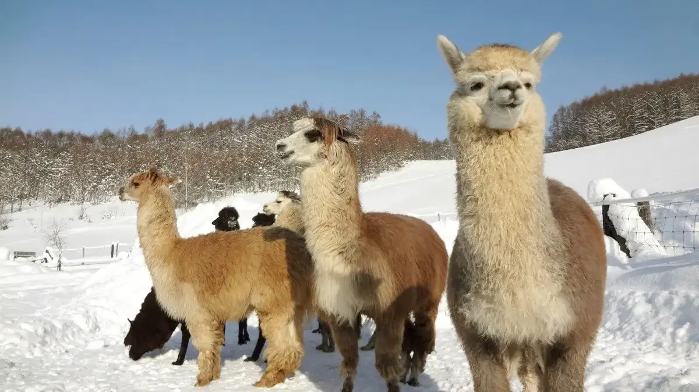
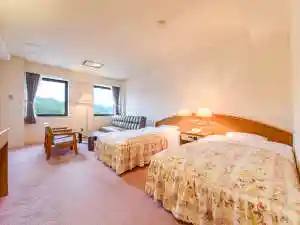
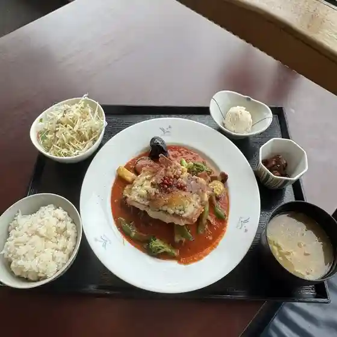
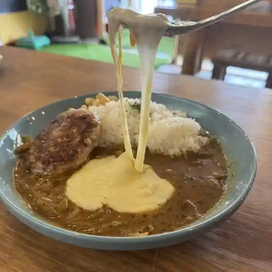
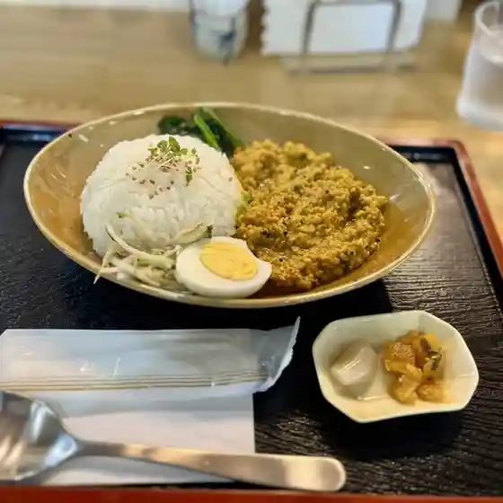
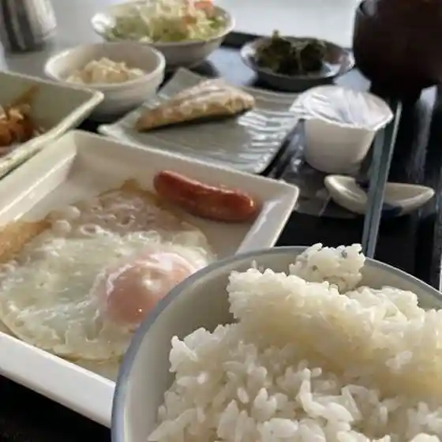
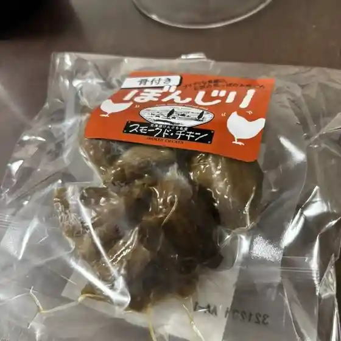
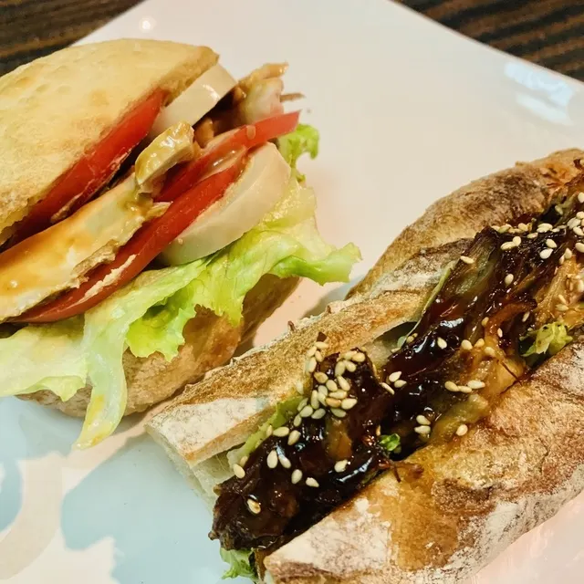
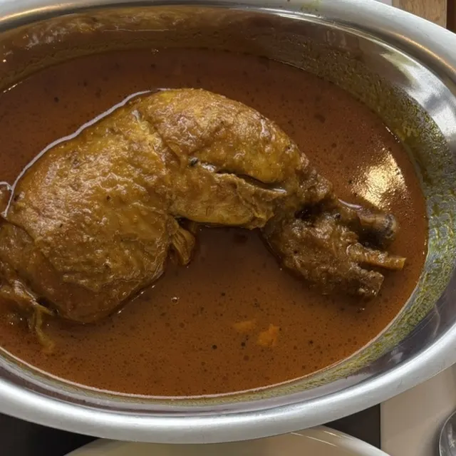

Kenbuchi
Kenbuchi · Hokkaido
Kenbuchi
Highlighted on the Hokkaido map.

Stay
剣淵温泉レークサイド桜岡

Kenbuchi Onsen Reekusaido Sakuraoka
Dining
世田谷 下北ファーム

Setagaya Shimokita Faamu
BeeN's Spice

Been'S Spice
お食事処 さわらび

O Shokuji Tokoro Sawarabi
セイコーマート けんぶち店

Seikoomaato Kenbuchi Mise
レークサイド桜岡

Reekusaido Sakuraoka
ゴトウくんせい

Gotou Kunsei
燻し家

Ibushi Ie
SHANDI NIVAS VADAKKU

Shandi Nivas Vadakku
味のよし武
Aji Noyoshi Takeshi
やまもと亭
Yamamoto Tei
モンレーブ
Monreebu
パン工房 ムーニャ
Pan Koubou Muunya
やまだ菓子舗
Yamada Kashi Ho
喫茶らくがき
Kissa Rakugaki
道の駅 絵本の里けんぶち
Michi No Eki Ehon No Sato Kenbuchi
ビバアルパカ牧場
Bibaarupaka Bokujou
駅前旅館
Ekimaeryokan
Sights
Bibarupaka Ranch
Bibarupaka Ranch